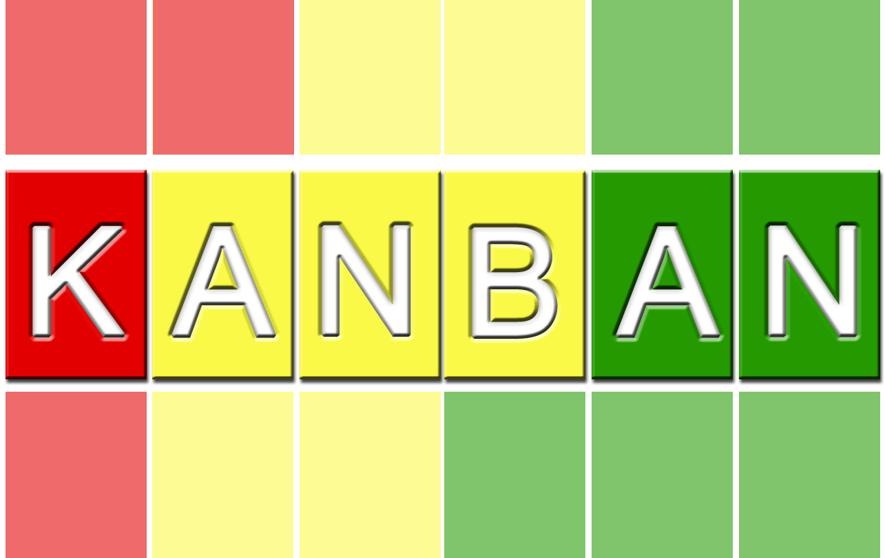
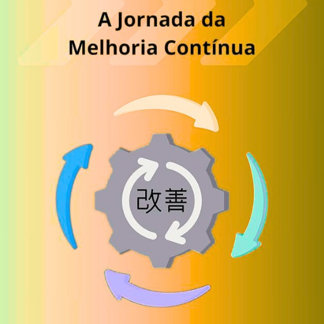
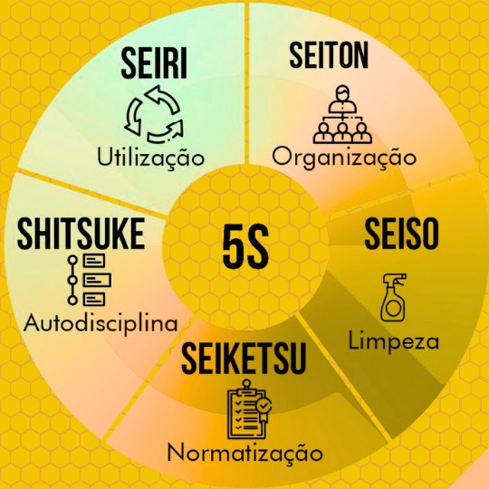
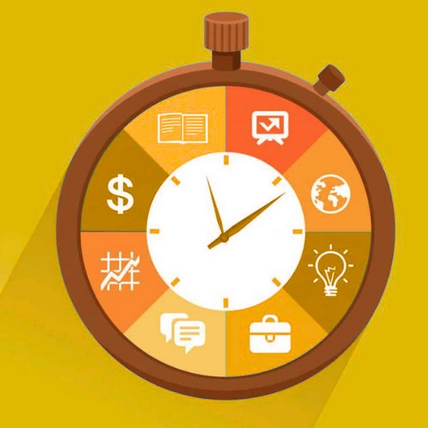

O que é Logística Integrada?
Logística integrada é a gestão unificada de todos os processos logísticos de uma empresa, conectando compras, armazenamento, transporte, distribuição e logística reversa. O objetivo é otimizar recursos, reduzir custos, aumentar a eficiência operacional e garantir que produtos e serviços cheguem ao cliente de forma rápida, segura e sustentável. Essa integração permite que cada etapa da cadeia logística funcione de maneira coordenada, evitando desperdícios e melhorando a experiência do cliente.
Metodologias de Gestão
Kanban
Entenda como as empresas adquirem e armazenam materiais de forma organizada.
Kaizen
Entenda a filosofia japonesa de melhoria contínua.
5S
Entenda o método japonês de organização e padronização.
Just in Time
Entenda o sistema de produção sob demanda.
